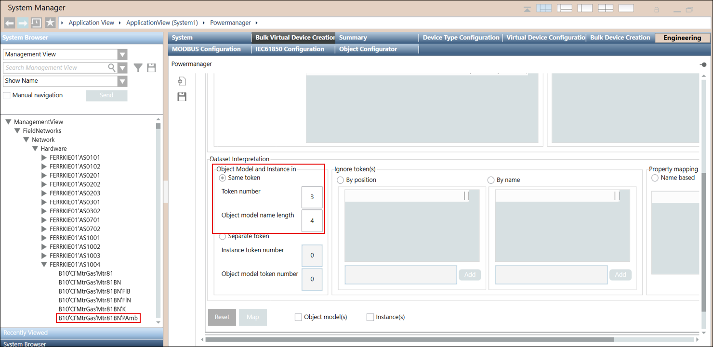
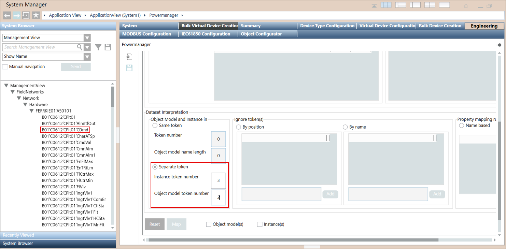

Defining Object Models and Device Instances
- Dataset is filtered.
- Perform either of the following to create the object model and instances in the Dataset Interpretation section:
- Same token: Select the Same token option, if you want the object model name and instance name to be created from the same string. Specify the number in the Token number field which decides the string from which the object model name and instance name both are created.
NOTE: All the strings are separated by a delimeter such as ('). String before each delimeter is considered as a single string.
To set the name of the object model specify the length of the object model in the Object Model name length field. The count decides the characters to be included in the object model name and the instance name will be the complete string.
For example, if you have B10'CI'MtrGas'Mtr81BN'PAmb node and you have specified the Token number as 3 and Object Model name length as 4. then object model name will be MtrG and instance name will be the complete string MtrGas. The object model name and instance name is created from same string MtrGas. 
- Separate token: Select the Separate token option, if you want the object model name and device instance to be created from the different strings. To set the name of the object model, specify the token number in Object model token number field and the instance name is as per the Instance Token number.
For example, you have B01'C0612'CPlt01'CDmd node and you have specified the Instance token number as 3 and Object model token number as 2. Then the instance name will be CPlt01 and object model name will be C0612.
